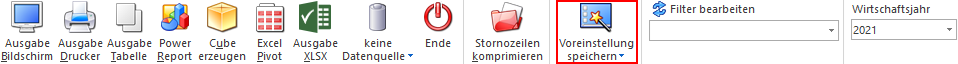

Gerade bei komplexen Auswertungen mit diversen Optionen kann das richtige Hinterlegen der gewünschten Einstellungen eine gewisse Zeit in Anspruch nehmen und beherbergt immer die Gefahr, eine Fehleingabe zu tätigen.
Zur Unterstützung dieser Aufgabe steht der Button "Voreinstellungen speichern" zur Verfügung, d.h. die getroffenen Einstellungen innerhalb des Fenster können unter einem selbst zu vergebenen Namen gespeichert und jederzeit wieder aufgerufen werden.

Da im Zusammenhang mit Voreinstellungen viele verschiedene Aktionen benötigt werden, handelt es sich bei dem Voreinstellungs-Button um einen Aufklapp-Button mit folgenden Auswahlen:
ü Voreinstellungen
speichern
Durch Anwahl von "Voreinstellungen speichern" werden die im
Ausgangsfenster getätigten Einstellungen und Selektionen (inklusive
Filterauswahl) zur Speicherung vorbereitet und das Fenster Voreinstellungen im Modus "Speichern"
geöffnet.
ü Voreinstellungen
bearbeiten
Durch diese Auswahl wird das Fenster Voreinstellungen im Modus "Bearbeiten"
geöffnet. Dort können die bereits gespeicherten Voreinstellungen bearbeitet oder
auch gelöscht werden.
Hinweis
Die Auswahl steht nur zur Verfügung, wenn für das Ausgangsfenster mindestens eine Voreinstellung existiert.
ü Eingaben initialisieren
Mit
Hilfe von "Eingaben initialisieren" werden alle getätigten Selektionen und
Einstellungen verworfen.
ü Voreinstellungen
Am Ende des
Aufklapp-Buttons werden die Voreinstellungen des Benutzers, bezogen auf das
Ausgangsfenster, aufgelistet. Der Eintrag mit dem Icon stellt dabei den Standard da.
Durch
Anwahl einer Voreinstellung wird diese sofort geladen und der Name zusätzlich im
Ribbon dargestellt.
Hinweis
Die Reihenfolge der Voreinstellungen kann über Voreinstellungen bearbeiten jederzeit angepasst werden.